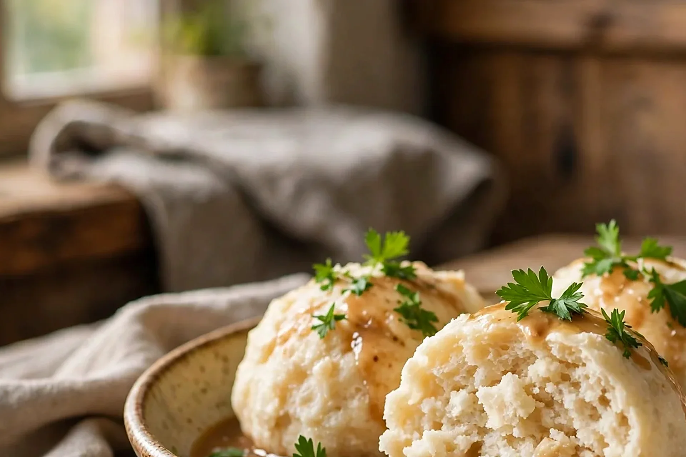

Semmelknödel (Bread Dumplings)
Bread dumplings are the best way to turn day-old rolls into something wonderful. Smooth on the outside, fluffy inside – they soak up every sauce perfectly. Do not worry: with a few small tricks, they are guaranteed not to fall apart.

Contents
Ingredients
Instructions
- Cut the rolls into cubes of about ½ inch (1 cm) and place them in a large bowl. Warm the milk (do not boil it) and pour it evenly over the cubes. Let soak for about 10 minutes.
- Melt the butter in a small pan and sweat the onion until translucent. Let cool slightly.
- Add the onion, eggs, parsley, salt, pepper and nutmeg to the rolls and knead everything with your hands into an even mixture. If it is very soft, work in 1–2 tablespoons of breadcrumbs.
- With damp hands, shape 8 dumplings of equal size and press them firmly together so no cracks form.
- Bring plenty of salted water to a boil in a large pot, then reduce the heat until the water is just simmering. Add the dumplings and poach for 15–20 minutes – they must never boil hard.
- Lift the dumplings out with a slotted spoon, drain briefly and serve at once.

Tip
Always poach one test dumpling first: if it falls apart, knead a few more breadcrumbs into the mixture. And the water may only simmer, never boil – bubbling water is the most common reason dumplings break up.
📌 Find more recipe ideas on our Pinterest profile:
Lecker Rezepte on Pinterest
Lecker Rezepte on Pinterest